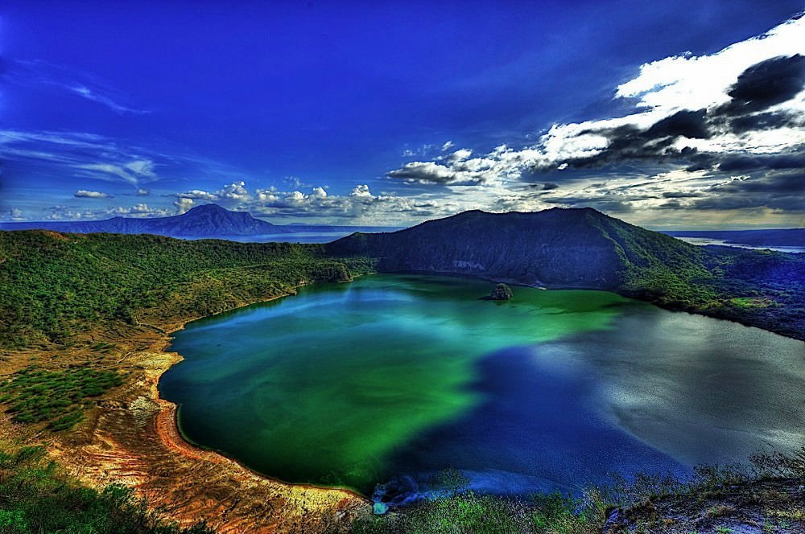

Taal, located in the province of Batangas, Philippines, is a place of rich cultural heritage and breathtaking natural beauty. It is renowned for its iconic Taal Volcano, often referred to as the world's smallest active volcano, nestled within the serene Taal Lake. The town of Taal itself is steeped in history, boasting well-preserved Spanish colonial architecture that reflects its colonial past. Visitors can explore heritage sites such as the Basilica de San Martin de Tours, one of the largest Catholic churches in Asia, which showcases intricate Baroque and Neoclassical architectural styles. Aside from its historical landmarks, Taal offers a range of outdoor activities for nature enthusiasts. Tourists can embark on a boat ride across Taal Lake to get a closer look at the volcano or hike up to the crater rim for panoramic views of the surrounding landscape. Adventurous travelers can also opt for horseback riding tours to explore the scenic trails around the volcano. In addition to its natural wonders, Taal is known for its vibrant culture and culinary delights. Visitors can immerse themselves in the local culture by attending traditional festivals and events, such as the colorful Taal Town Fiesta, where they can experience lively parades, street performances, and delicious local cuisine. Overall, Taal, Philippines, offers a perfect blend of history, nature, and culture, making it an ideal destination for travelers seeking an enriching and memorable experience in the heart of Batangas province.
Taal, Batangas, Philippines
